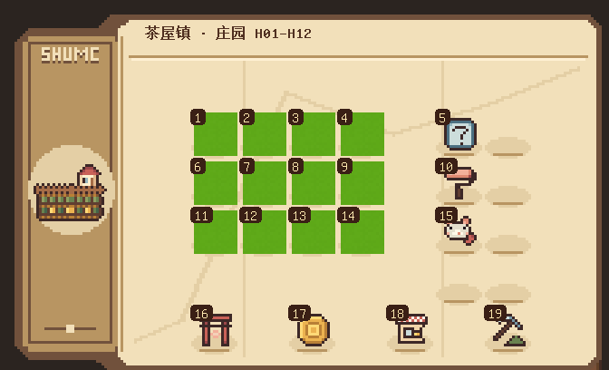
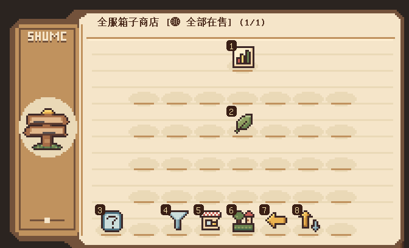

领地与家
在哪安家：主城里租庄园和商铺，或者出城门在樱花山谷自由建造、圈地保护；回家、授权好友、开箱子商店
三种安家方式
| 环城庄园 | 商业街旺铺 |  城外自由区 城外自由区 | |
|---|---|---|---|
| 大小 | 31×31，自带一栋木屋 | 15×15 双层临街店，带精装店面 | 你圈多大就多大 |
| 费用 | 30 币 / 7 天 | 50 币 / 7 天 | 免费（用领地额度） |
| 数量 | 12 块（H01–H12），每人限 1 块 | 8 间（01–08），每人限 1 间 | 不限 |
| 到期 | 不续租就自动收回，变回待租；可以提前续租叠加天数 | 永久，不重置 | |
| 指令 | /dipi | /playershop | 金铲子 / /lingdi |

新手见面礼的 30 币刚好够租一块庄园 7 天。资源世界每周重置，千万别在资源世界里盖家。
环城庄园 /dipi
/dipi（别名 /地皮、/租地、/买地）打开庄园列表：绿色是空地，左键传送到门口看房，右键直接租下。12 块庄园分布在北苑 H01–H03、南苑 H04–H06、西苑 H07–H10、东苑 H11–H12。
| 指令 | 作用 |
|---|---|
/dipi rent H05 | 租下指定庄园 |
/dipi renew | 续租（叠加 7 天） |
/dipi home | 传送回自己的庄园 |
/dipi tp H05 | 去某块庄园门口看看 |
/dipi template 风格 | 一键换整套装修：cottage 木屋 / sakura_garden 樱花茶庭 / farmstead 农庄（成套 120 币），flat 清空草坪（免费） |
/dipi trust 好友 / untrust | 授权 / 取消好友在庄园里建造（搭子自动共享） |
/dipi unrent | 退租 |


商业街旺铺 /playershop
/playershop（别名 /玩家店铺）：正南商业大街两侧 8 间 15×15 双层店铺，租下后随便改建，还能在店里开箱子商店。用法和庄园一样：rent 01 / renew / tp / unrent / trust 好友，一键装修是 /playershop style teashop|blacksmith|florist|empty（成套 120 币，清空免费）。

城外自由区与圈地
走出东南西北任意城门（离主城中心约 116 格以外），整片樱花山谷都能自由生存建造，开服后永不重置。为了不被别人动你的东西，记得圈地：
- 金铲子：手持金铲子（或杂货铺的
 茶屋金铲圈地杖）分别右键两个对角方块，就能圈出一块受保护的领地，别人不能破坏或开箱。
茶屋金铲圈地杖）分别右键两个对角方块，就能圈出一块受保护的领地，别人不能破坏或开箱。 - 放第一个箱子：在野外放下你的第一个箱子会自动圈出 9×9。
/lingdi（别名/领地、/圈地）：领地便携管理面板。⚡ 一键圈地以脚下为中心圈 11×11 / 15×15 / 21×21 / 25×25（消耗领地额度）；快捷扩容朝你面向的方向推出 3 / 5 / 10 / 20 格；还能看「我的领地」列表、高亮边界、管理好友权限。
| 领地指令 | 作用 |
|---|---|
/trust 玩家名 | 允许好友在你的领地里建造和开箱（站在领地里只管这一块，站在野外管你全部领地） |
/untrust 玩家名 | 取消好友权限；/untrust all 清空所有人 |
/trustlist | 看脚下领地信任了谁 |
/extendclaim 格数 | 把脚下领地朝面向方向扩大 |
/abandonclaim | 放弃脚下的领地 |

家与传送
| 指令 | 作用 |
|---|---|
/sethome [名称] | 把当前位置设为家（可以设多个） |
/home [名称] | 传送回家 |
/delhome 名称 | 删除一个家 |
/spawn | 回主城中央广场；/spawn fish 去樱溪东岸钓鱼 |
/back | 回到上次传送或死亡的位置 |
/tpa 玩家名 | 请求传送到好友身边；对方点 [✔ 接受]（/tpaccept）或 [✖ 拒绝]（/tpdeny） |
杂货铺的茶屋传呼铃右键也能一键回主城。在野外设了家，你的家就会出现在 /visit 邻里家园榜上，朋友可以来做客。
箱子商店 /cshop
在自己的店铺或庄园里摆箱子卖东西，别人来买，茶屋币自动进你的账：
- 先租旺铺
/playershop或庄园/dipi； - 放一个箱子或木桶，把要卖的东西放进去；
- 准星对准箱子输入
/cshop 单价（或挂一块写着[商店]和单价的告示牌）。
只输入 /cshop（别名 /箱子商店、/玩家商店）是打开全服箱子商店名录：可以按分类筛选、按价格排序，点任意商品直接传送到店门口。/cshop remove 撤店，/cshop help 看说明。旺铺可以用 /playershop trust 好友 请帮手。

